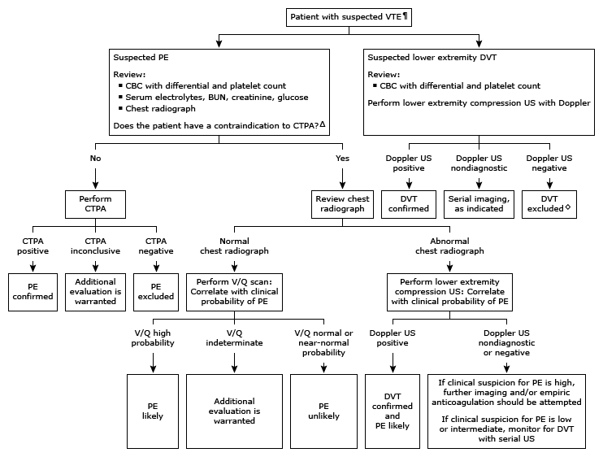

VTE: venous thromboembolism; PE: pulmonary embolism; CBC: complete blood count; BUN: blood urea nitrogen; CTPA: computed tomography pulmonary angiography; DVT: deep vein thrombosis; US: ultrasonography; V/Q scan: ventilation/perfusion scan; eGFR: estimated glomerular filtration rate.
* The D-dimer test is reported as either positive (≥ threshold cut-off) or negative (< threshold cut-off). Interpretation of a specific abnormal test result should be based upon the cut-off value reported with that result. There are no established normal reference ranges for the antepartum or postpartum periods.
¶ The pretest probability of VTE determines whether D-dimer testing is appropriate. For higher risk patients or those with positive D-dimer results ≥ the laboratory reported threshold cut-off value, perform diagnostic imaging to establish or exclude VTE.
Δ Contraindications to CTPA include allergy to intravenous contrast, high risk of contrast nephropathy (eGFR <45 mL/min/1.73 m2, known diabetic nephropathy, hypotension, advanced heart failure, multiple myeloma).
◊ If whole leg US was performed, DVT is excluded. If proximal US was performed, only proximal DVT is excluded.